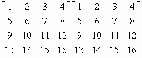

四階矩陣平方 (Square of a 4×4 matrix)
程式編寫日期: 2014年6月22日
程式需要在 REG Quad 模式下執行，因此在選擇新程式位置後，按 5 → 2 選用REG Quad模式。
注意: 藍色的英文字為統計模式中的變數( n 按 Shift 1 3 Σx 按 Shift 1 2，Σy 按 Shift 1 → 2，Σxy 按 Shift 1 → 3)，FreqOn 按 Shift MODE ← ← 1，E 是按 EXP 。
程式 (376 bytes)
FreqOn: ?→A: ?→B: ?→C: 1 ; 2-1(A+B-2C DT:
- 1 ; 2-1(A-B DT: 1 , 1 ; C DT: ?→D:
E-50 , 1 ; E50(D-C DT: ?→X: 0 , 1 ; - Σy DT: ?→Y:
; Y DT: , E-50 ; E50(X - Y DT: ?→A: ?→B: ?→C:
E-34 , 0 ; E68(C-Σx2 DT: E-50 ; - E50Σx DT:
; E50B DT: 0 ; -n DT: ; A DT: ?→A: ?→B: ?→C:
?→D: ?→X: ?→Y: ?→M:
Σx4 Σx4 + Σx3 Σy + Σx2y Σx2 + Σxy D◢
Σx4 Σx3 + Σx3 Σy2 + Σx2y A + Σxy X◢
Σx4 Σx2y + Σx3 n + Σx2y B + Σxy Y◢
Σx4 Σxy + Σx3 Σx + Σx2y C + Σxy M◢
Σy Σx4 + Σy2 Σy + n Σx2 + Σx D◢
Σy Σx3 + Σy2 Σy2 + n A + Σx X◢
Σy Σx2y + Σy2 n + n B + Σx Y◢
Σy Σxy + Σy2 Σx + n C + Σx M◢
Σx2 Σx4 + A Σy + B Σx2 + CD◢
Σx2 Σx3 + A Σy2 + BA+ CX◢
Σx2 Σx2y + A n + BB+ CY◢
Σx2 Σxy + A Σx + BC+ CM◢
D Σx4 + X Σy + Y Σx2 + MD◢
D Σx3 + X Σy2 + YA+ MX◢
D Σx2y + X n + YB+ MY◢
D Σxy + X Σx + YC+ MM
例題: 計算下列矩陣

按 Prog 1 再按 1 EXE 2 EXE 3 EXE 4 EXE 5 EXE 6 EXE 7 EXE
8 EXE 9 EXE 10 EXE 11 EXE 12 EXE 13 EXE 14 EXE 15 EXE 16
EXE (顯示90) EXE (顯示100) EXE (顯示110) EXE (顯示120)
EXE (顯示202) EXE (顯示228) EXE (顯示254) EXE (顯示280)
EXE (顯示314) EXE (顯示356) EXE (顯示398) EXE (顯示440)
EXE (顯示426) EXE (顯示484) EXE (顯示542) EXE (顯示600)
所以
返回 CASIO fx-50FH、fx-3650P II、fx-50FH II及fx-50F PLUS 程式集